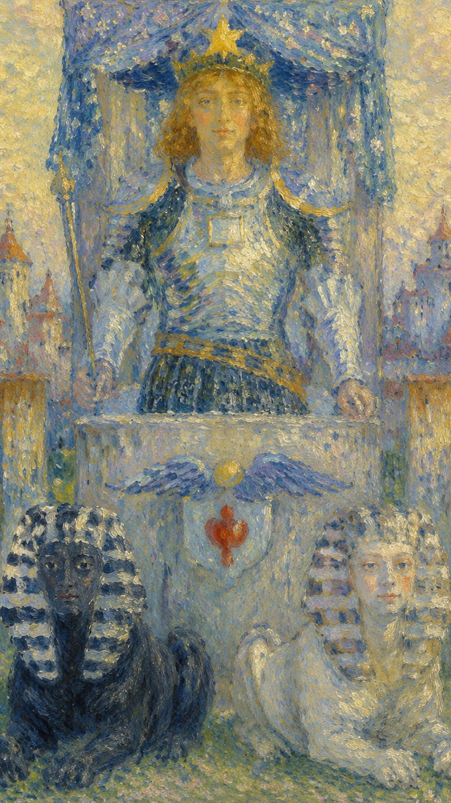
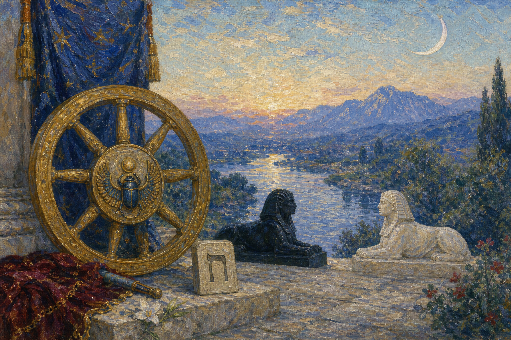
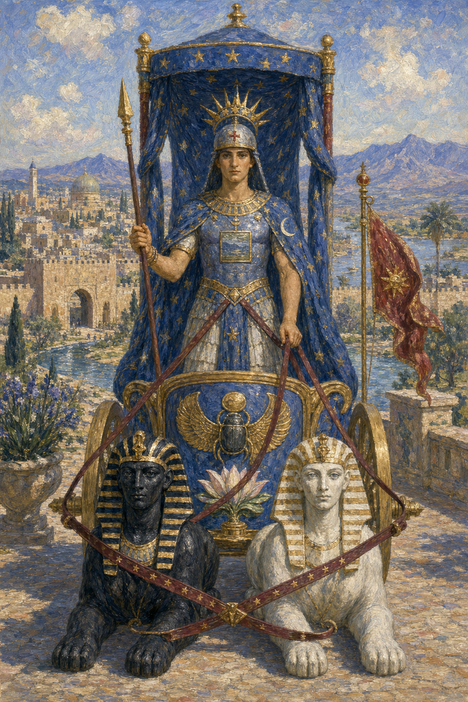
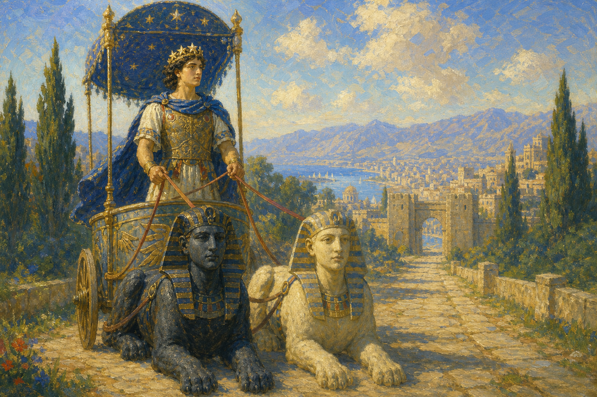
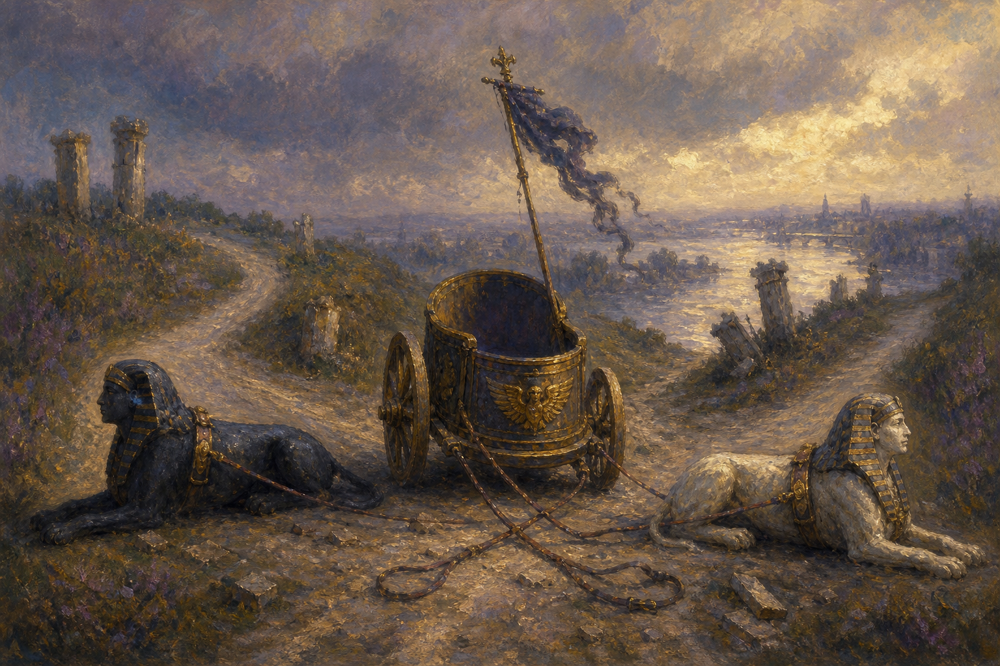
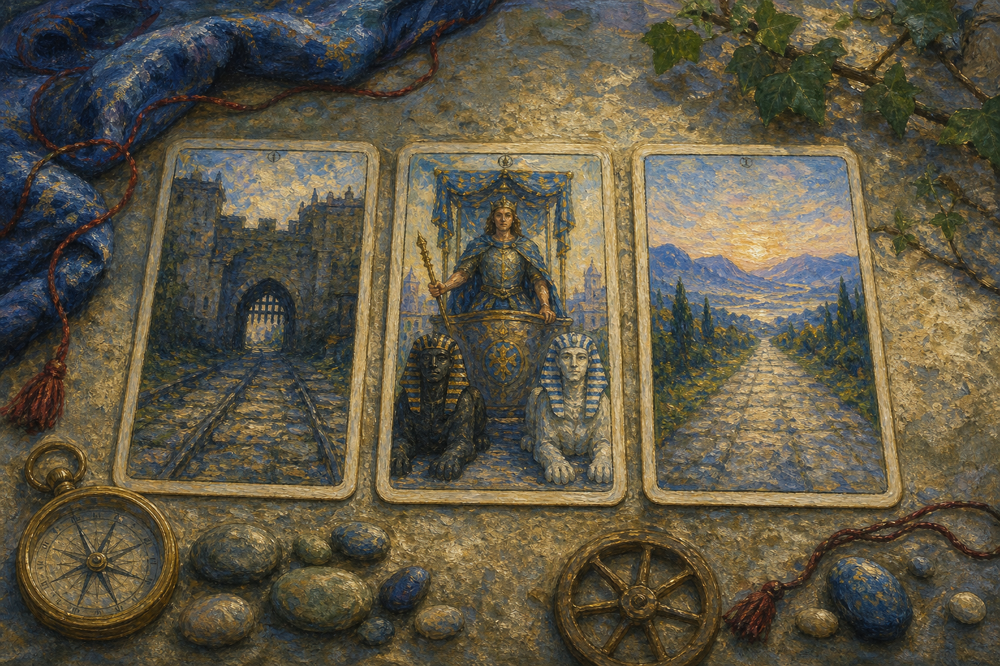

战车把奔涌的情绪与未驯的欲望纳入方向感之中。它象征经由自律、专注与对立力量的整合而取得的推进——胜利从来不是天降的礼物，而是意志在阻力中辟出的一条道路。 当这张牌出现，说明目标已经明确，问题不在于"要不要走"，而在于你是否能稳住节奏，不被外界干扰拖走。走过了三分之一旅程的愚者，在这里蜕变成一名成熟、勇敢的战士，披荆斩棘地朝胜利奋勇前进。然而战车的出现并不意味着成功已经到手，它只是郑重地告诉你：成功是可能的。要把这份可能兑现成现实，你需要强大的控制力，因为眼前之事并不简单，而它的成败对你意义重大——无论是事业还是感情，战车始终带着"要自制，不可感情用事"的叮咛。
← 返回大厅 / 选择其它卡牌牌面中，一位头戴八芒星战盔、身着盔甲的勇士驾驶着一辆由两只狮身人面兽拉动的战车，向着胜利勇往直前，威风凛凛、无人可挡。战车左侧的黑色狮身人面兽代表严厉，右侧的白色狮身人面兽代表慈悲，二者并行象征阴阳的调和，也即追求胜利的根本条件——平衡。蓝色车篷由四根柱子支撑，对应火、水、风、土四大元素；篷上的六芒星图案象征天体对战士成功的影响，也预示着"希望"对获得胜利的重要。勇士右手紧握长矛，昭示内心对胜利的渴求；胸前的正方形代表土元素，象征意志的力量。车前一对翅膀相传是古埃及图腾，代表灵感；翅膀下的小盾牌则被认为是古印度预示阴阳结合的符号。
战士身后是城市，意味着他已将物质放在身后，转而展开心灵的旅程。他手上没有缰绳，狮身人面兽身上也没有束缚——真正的控制来自强大的内在意志，而非外部的强迫。这同时暗示着人类的意志与本能：黑与白的力量都被驾驭在车前，唯有方向统一，战车才能前进；倘若无法好好驾驭，它们便会彼此拉扯，让胜利从指缝间溜走。他站在城门外守望，既是守护者，也是防卫者。战车是一张既要劳力又要劳心的牌——它近似于钱币二与权杖骑士的混合体：钱币二"平衡双方"的主题在此被推到极致，黑白二兽明确点出这两端是相互对立的，因此即便是精于驾驭的英雄，也不得不倾尽全力去控制这两匹时刻想挣脱彼此的烈马；而权杖骑士的处境则提醒我们，英雄虽受人爱戴、一路风光，地位却并不稳固，他只能不停奔向下一个战场，靠持续的建功立业来守住自己的位置。
战车所示并非"非对即错"的判断题，而是一道选择题。正位时，无论你选择哪一个，结果都不会差；逆位时，则提醒你——无论选择哪一个，结果都不太理想。差别不在于有没有答案，而在于此刻你的自我控制力，是否足以驾驭已经摆在面前的局面。
勇士右手紧握长矛，昭示内心对胜利的渴求；胸前的正方形代表土元素，象征意志的力量。
巨蟹座的保护性外壳，把敏感的内在驱力转化为可持续的推进。
Cheth 是一条把理解与严格联结起来的道路：方向感必须经过纪律的检验。
战车的胜利不是速度，而是把对立力量收拢到同一条轴线上。


行动平台与人生方向，象征胜利、征服与自我断言。
对立力量、矛盾欲望与需要整合的方向；呼应康德的道德法则，是黑暗与光明的对立，也是必须克服的对立统一。
本能、动力，以及驾驭自然力量的需要。
控制两只神兽的束带，象征以精神力量掌控物质世界。
自我保护与战斗准备。
精神目标与胜利信念；星星象征精神向导与高尚追求，暗示与宇宙或更高知识的联系。
情绪潮汐与内在驱动力，代表直觉、潜意识及对隐藏事物的感知。
胸前装饰象征有秩序、有逻辑的思维，同时映照神秘与知识。
盔帽前方的红十字象征灵魂的平衡，以及物质与精神的融合。
主人公手持的法杖象征权威与意志的力量。
金色象征财富、力量与高尚，领子本身寓意权威和地位。
象征力量、荣耀与成功。
离开熟悉环境走向征服；基座后的城墙代表已被或即将被征服的文明，也是要面对的障碍。
背景中的河流象征情感的流动、直觉与变革。
山脉代表挑战与未来的征程。
车上的圣甲虫象征埃及太阳神，寓意生命、复兴与永恒的旅程。
荷花是东方文化中纯净与启蒙的象征，支撑车座，代表精神力量。
数字 7 代表探索、专注、精神试炼，以及胜利前夕的自我约束。它要求人从混杂纷乱的能量中，辨认并走出一条明确的道路。
战车的 7 号能量说明了一件事：胜利来自阻力之中的方向感。当外界的拉扯越大，越需要一个清晰而不动摇的目标，把所有看似对立的力量收拢到同一条前进的轴线上。

正位的战车把问题从“要不要走”改写为“能否稳住方向”。它允许你主动争取、快速推进，但这份胜利只在纪律仍然有效时成立：请把速度交给清晰的目标，把力量交给可持续的节奏。
胜利，前进，自律，控制，目标明确，竞争成功，旅行，突破，高效率，搬家，指挥，掌管，支配，限制，意志，成功，发财，成名，成功的人，决心，果断，坚定，决定，确定，查明，测定，计算，进步，自我控制，自我肯定，坚强的意志，以积极的心态面对事物，把握先机，取得驾照，必须要做，务必完成，坚定的决心
水 元素 · 开启、滋养与自我调和
健康上适合训练、减脂、制定运动计划，以及恢复一种久违的自律。战车的能量也鼓励户外活动——滑雪、兜风、骑马、踏青都很相宜，甚至适合考取驾照、培养对新鲜事物的爱好，或养成写日记、记录目标的习惯。但要注意过度用力、运动损伤，以及胃部与情绪上的压力，因为战车虽强，也需要稳定的节奏；懂得把握张弛，才不至于把自己逼到熄火。
正位战车常代表旅行、车辆、搬迁、比赛、胜诉、突破阻碍，也适合一切需要主动出击、奋勇向前的户外与新鲜尝试——滑雪、兜风、骑马、踏青、考取驾照、对新事物布满热情，乃至以写日记的方式整理方向。若问结果，正位通常表示可以胜出，关键在于全程保持节奏、不中途松懈。

逆位的战车不是简单的失败预言，而是方向尚未统一的诊断。若两股力量同时拉扯，继续加速只会扩大偏差；先减速、重新确认目标，再决定哪些控制必须放下，哪些承诺值得保留。
失控，方向混乱，冲动，停滞，失败，内耗，强行推进，发生意外，胡作非为，止步不前，固执己见，注意力散漫，遇突发事件而不知所措，自我约束缺失，方向感缺失，反对，反抗，对抗，对手，敌人，竞争者，没有方向，没有领导，挫败，不必要的冲突，目标不明确，行动无法果断，过于冒进，过于激进，混乱而不稳定
水 元素 · 延迟、失控与过度自我沉溺
健康上可能与过劳、运动伤害、情绪紧绷、胃部不适有关。逆位战车提醒你：真正的自律包括知道什么时候该停。当注意力散漫、因突发事件而措手不及时，硬撑只会让身体与情绪一同失速；适时减速、重新找回节律，远比一味冲刺更能护住你这副远征的躯体。
事情可能出现延误、交通问题、计划变更、竞争失利，也可能伴随固执己见、超速驾驶、注意力散漫、自得忘形，或因遭遇突发事件而措手不及。先检查自己是否同时朝两个方向用力，往往比责怪外部阻力更有效——把分裂的力量重新收拢到一条轴线上，比强行推进更接近转机。

当战车出现在三牌阵中，它象征的是能量在时间维度上的显现。点击下方卡牌揭示隐秘启示。
你可能经历过一段竞争激烈、需要高度自律的时光，早期的努力与奋斗为今日的成就奠定了根基。
你或许正体验着成功驾驭、掌控生活的感觉，对自己的方向充满自信，正稳稳朝着目标前进。
持续的努力将带来更多成就与胜利，不过你仍需保持自律与决心，不可松懈。